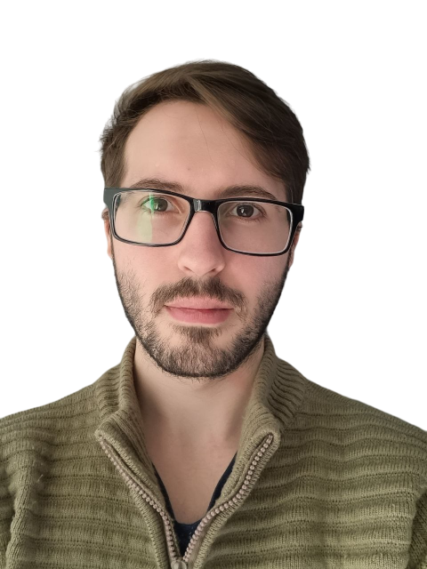

¡Hey! Soy Leonardo Esteban Zermoglio
Desarrollador web especializado en diseño front-end y con formación en Psicología. Utilizo esta perspectiva para comprender las expectativas de mis clientes y crear sitios web acordes a sus valores, creencias y necesidades permitiéndome plasmar sus visiones singulares de manera profesional y accesible.
